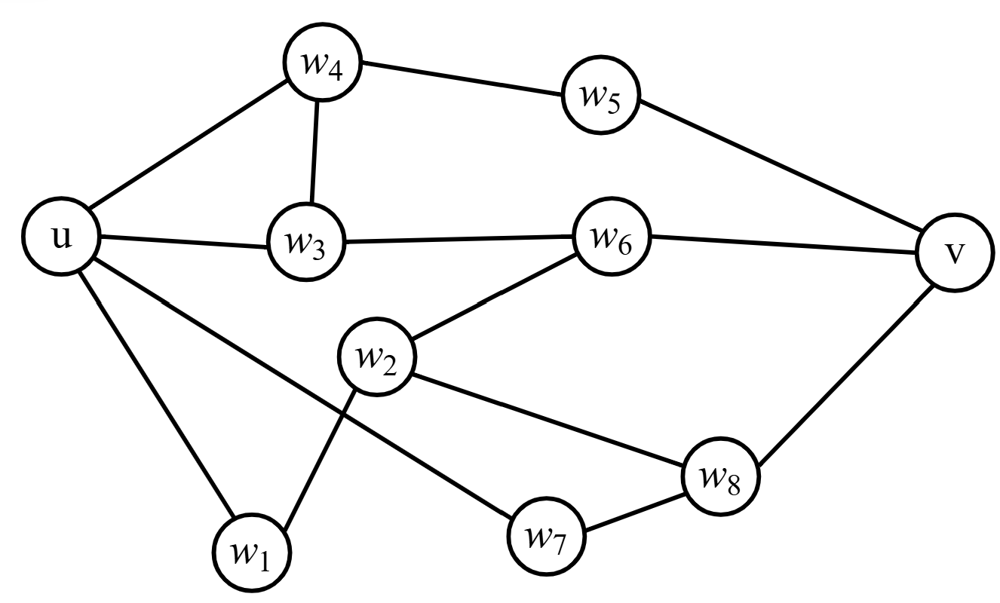

Lecture 13: Menger’s Theorem & Proof Technique#
Warmup#
Question 24


Remove some vertices in \(G\) (excluding \(u\) and \(v\)) to ensure there is no \(uv\)-path. What is the minimum you need to remove to do so?
Note that the \(uv\)-paths \(u\) to \(w_3\) to \(w_6\) to \(v\) and \(u\) to \(w_4\) to \(w_5\) to \(v\) only share verties \(u\) and \(v\). What is the maximum number of such paths you can find in \(G\)?
Theorem 22 (Menger’s Theorem)
Let \(u\) and \(v\) be distinct vertices in \(G\) with no edge between them. Then, the minimum number of vertices in a \(uv\)-separating set is exactly the maximum number of internally disjoint \(uv\)-paths (i.e. \(\psi_G(u,v)=\kappa_G(u,v)\)).
Definition 38
Let \(G\) be a graph with vertices \(u\) and \(v\) but not the edge \(\{u,v\}\). Then,
\(S\subseteq V\) is a uv-separating set if there is no \(uv\)-path in \(G-S\). The minimum size of these sets will be denoted \(\kappa_G(u,v)\).
Two \(uv\)-paths in \(G\) are internally disjoint uv-paths if they only have the vertices \(u\) and \(v\) in common. The maximimum number of these for a graph \(G\) will be denoted \(\psi_G(u,v)\).
Method of Proof for Menger’s#
We have gone through so many proofs this semester. Let’s use some lingo to discuss proof techniques we will use for Menger’s (and refresh on proof techniques in general!).
The way we will prove Menger’s theorem is by induction. A proof by induction proceeds as follows:
Prove a claim is true for a simple case
Assume the claim is true for all \(n\leq k\)
Prove that the claim being true for \(n\leq k\) means the claim is \emph{also} true for \(n=k+1\).
My personal intuition is: “I took a step. I could have been walking for a while. If I have been, I’m capable of taking another step.” A great example of this proof technique in action:
Theorem 23
\(1+2+3+\cdots+n=\frac{n(n+1)}{2}\) for all whole numbers \(n\geq 1\).
Proof. We will show this equality holds by using induction.
Base case: Let \(n=1\). Well, the left hand side of the equality would be \(1\). The right hand side would be \(\frac{1(1+1)}{2}=\frac{1(2)}{2}=1\). The left hand side equals the right hand side. So, this claim holds for \(n=1\). Great!
Hypothesis: Assume \(1+2+3+\cdots+n=\frac{n(n+1)}{2}\) when \(n\leq k\) for some whole number \(k>1\).
Induct: Consider the case when \(n=k+1\). Well, the left hand side would be:
From our hypothesis, we know that up to \(n=k\), we have a nice formula. So, let’s use it: \(\begin{align*} 1+2+3+\cdots+(k-1)+k+(k+1)&= \frac{k(k+1)}{2}+(k+1) \end{align*}\) Let’s simplify the sum a little:
\(\begin{align*} 1+2+3+\cdots+(k-1)+k+(k+1)&= \frac{k(k+1)}{2}+(k+1)\\ &= \frac{k(k+1)}{2}+\frac{2(k+1)}{2}\\ &= \frac{k(k+1)+2(k+1)}{2}\\ &= \frac{(k+2)(k+1)}{2}\\ \end{align*}\)
So, using the inductive hypothesis above, we have that the left hand side equals \(\frac{(k+2)(k+1)}{2}\). Plugging \(n=k+1\) to the right hand side of the claim gives \(\frac{n(n+1)}{2}=\frac{(k+2)(k+1)}{2}\). Great! The left hand side equals the right hand side.
Thus, we know \(1+2+\cdots+n=\frac{n(n+1)}{2}\) holds for not just \(n\leq k\) but all whole numbers \(n>1\).
The other proof technique we will use is contradiction. A proof by contradiction proceeds as follows:
To prove a claim is true, assume the oppposite of the claim is true.
Show that if the opposite of the claim is true, then there’s something wrong (e.g. a false implication, an impossible result, etc.)
Conclude that the original claim must be true.
My intuition for this is: “If the opposite of your claim leads to something ridiculous, then your original claim must be true”.
Here’s an example from the midterm:
Theorem 24
Prove that \(\delta(G)\geq 1\) for connected graphs \(G\).
Proof. Assume not! That is, there is some connected graph with \(\delta(G)<1\). Call this graph \(G\) and the vertex \(v\) with degree \(<1\) in \(G\). If the degree of \(v\) is less than 1, then it must be zero! So, no edges for \(v\). If there are no edges for \(v\), there can be no paths to \(v\). So, \(G\) cannot be connected. This contradicts our assumption that \(G\) is connected. So, \(\delta(G)\geq 1\) must be true for connected graphs.